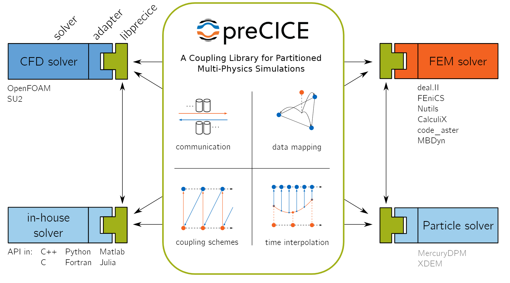
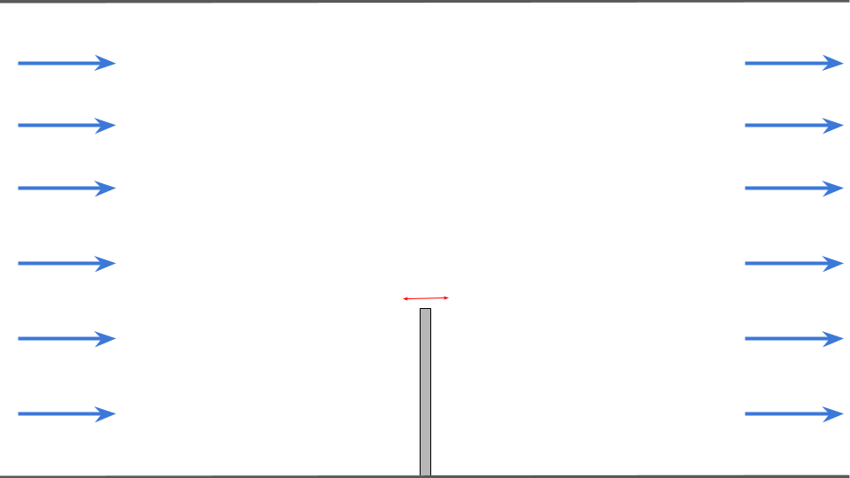
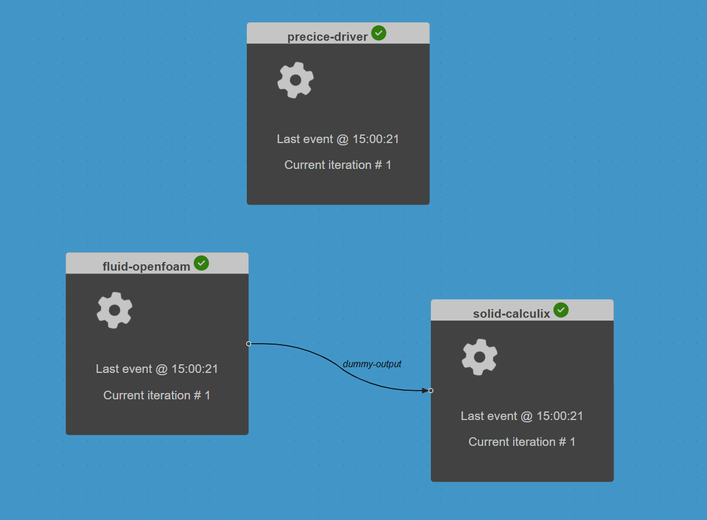

A fluid-structure interaction simulation with preCICE, OpenFOAM and CalculiX
Contents
11. A fluid-structure interaction simulation with preCICE, OpenFOAM and CalculiX#
 Load tutorial into dapta app.
Load tutorial into dapta app.
 View files on Github.
View files on Github.
Duration: 45 min
In this tutorial we explore the usage of the preCICE multi-physics simulations library with an FSI example. We run a fluid-structure interaction simulation with OpenFOAM to model the fluid flow and CalculiX to model the behaviour of a flexible flap exposed to the fluid flow.
This tutorial is based on the Perpendicular flap preCICE tutorial.

11.1. What is preCICE?#
preCICE stands for Precise Code Interaction Coupling Environment. Its main component is a library that can be used for partitioned multi-physics simulations, including, but not restricted to fluid-structure interaction and conjugate heat transfer simulations. Partitioned (as opposite to monolithic) means that preCICE couples existing programs (solvers) which simulate a subpart of the complete physics involved in a simulation.
The main elements of the preCICE library are shown in the following figure and include: communication, data mapping, coupling schemes and time interpolation. Read the preCICE docs to find out more about preCICE and how to use it.
{kind=link}
11.2. FSI model description#
We model a two-dimensional fluid flowing through a channel. A solid, elastic flap is fixed to the floor of this channel. The flap oscillates due to the fluid pressure building up on its surface. The setup is shown schematically in the figure below.
The simulated flow domain is 6 units long (x) and 4 units tall (y). The flap is located at the center of the bottom (x=0) and is 1 unit long (y) and 0.1 units thick (x). We set the fluid density to 1.0kg/m, the kinematic viscosity to 1.0m^2/s, the solid density to 3.0*10^3kg/m^3, the solid Young’s modulus to E=4.0*10^6kg/ms^2 and Poisson ratio to 0.3. On the left boundary a constant inflow profile in x-direction of 10m/s is prescribed. The right boundary is an outflow and the top and bottom of the channel as well as the surface of the flap are no-slip walls.
{kind=link}
11.3. Create the Components#
11.3.1. OpenFOAM fluid#
This component simulates the fluid flow in the channel.
Create the component:
Right-click in the workspace and select
Add Empty Node. Select the empty component to edit it.In the
Propertiestab, fill in the component name,fluid-openfoam, and select the preCICE-openFOAM component APIprecice-openfoam-comp:latest.Copy the contents of the
setup.pyandcompute.pyfiles from below into a text editor, save them locally. Then upload them under thePropertiestab.In the
Propertiestab check the box next to theStart Nodeoption.Copy the the following JSON object into the
Parameterstab text box:
{
"openfoam_precice": {
"subfolder": "fluid-openfoam"
}
}
From github download copies of the preCICE configuration file precice-config.xml and of the zip folder with the openFOAM input files fluid-openfoam.zip. Then upload these two files under the
Parameterstab by selectingupload user input files.Copy the following JSON object into the
Outputstab text box:
{
"dummy_output": 0
}
Select
Save datato save and close the component.
import shutil
from datetime import datetime
import zipfile
from pathlib import Path
def setup(
inputs: dict = {"design": {}, "implicit": {}, "setup": {}},
outputs: dict = {"design": {}, "implicit": {}, "setup": {}},
parameters: dict = {
"user_input_files": [],
"inputs_folder_path": "",
"outputs_folder_path": "",
},
) -> dict:
"""A user editable setup function."""
# unzip the analysis input files into run folder
inputs_folder = Path(parameters["inputs_folder_path"])
run_folder = Path(parameters["outputs_folder_path"])
subfolder = parameters["openfoam_precice"]["subfolder"]
for file in parameters["user_input_files"]:
src = inputs_folder / file["filename"]
if src.suffix == ".zip":
print(f"Unzipping {file['filename']} into local component outputs folder.")
with zipfile.ZipFile(src, mode="r") as f:
f.extractall(run_folder / subfolder)
else:
shutil.copy(src, run_folder / src.name)
if not (run_folder / "precice-config.xml").is_file():
raise ValueError("Missing precice configuration 'precice-config.xml'.")
message = f"{datetime.now().strftime('%Y%m%d-%H%M%S')}: Setup completed."
print(message)
return {"message": message, "outputs": outputs}
import shutil
from datetime import datetime
from pathlib import Path
import zipfile
from precice import run_openfoam_preCICE, run_openfoam_blockMesh
def compute(
inputs: dict = {"design": {}, "implicit": {}, "setup": {}},
outputs: dict = {"design": {}, "implicit": {}, "setup": {}},
partials: dict = {},
options: dict = {},
parameters: dict = {
"user_input_files": [],
"inputs_folder_path": "",
"outputs_folder_path": "",
},
) -> dict:
print("Compute started.")
# get components inputs
run_folder = Path(parameters["outputs_folder_path"])
if not "openfoam_precice" in parameters:
raise ValueError(
"Missing required openfoam_precice parmeter dictionary with keys 'subfolder'."
)
subfolder = parameters["openfoam_precice"]["subfolder"]
resp = run_openfoam_blockMesh(run_folder=run_folder / subfolder)
with open(run_folder / f"openfoam_precice.log", "w") as f:
f.write(resp["stdout"])
if not resp["returncode"] == 0:
raise ChildProcessError(
f'run_openfoam_blockMesh returned non-zero exit status {resp["returncode"]}'
)
resp = run_openfoam_preCICE(run_folder=run_folder / subfolder)
with open(run_folder / f"openfoam_precice.log", "a") as f:
f.write(resp["stdout"])
if not resp["returncode"] == 0:
raise ChildProcessError(
f'run_openfoam_precice returned non-zero exit status {resp["returncode"]}'
)
# zip output subfolder to keep openfoam outputs directory structure
outputs_zip = run_folder / (subfolder + ".zip")
with zipfile.ZipFile(outputs_zip, mode="w") as archive:
for file_path in (run_folder / subfolder).rglob("*"):
archive.write(
file_path, arcname=file_path.relative_to(run_folder / subfolder)
)
# then delete subfolder
shutil.rmtree(run_folder / subfolder)
print("Executed OpenFOAM analysis.")
message = f"{datetime.now().strftime('%Y%m%d-%H%M%S')}: Compute completed."
return {"message": message, "outputs": outputs}
11.3.2. CalculiX solid#
This component simulates the flexible flap fixed to the lower surface of the channel.
Create the component:
Right-click in the workspace and select
Add Empty Node. Select the empty component to edit it.In the
Propertiestab, fill in the component name,solid-calculix, and select the preCICE-CalculiX component APIprecice-calculix-comp:latest.Copy the contents of the
setup.pyandcompute.pyfiles from below into a text editor, save them locally. Then upload them under thePropertiestab.In the
Propertiestab check the box next to theEnd Nodeoption.Copy the the following JSON object into the
Parameterstab text box:
{
"ccx_precice": {
"env": {},
"infile": "flap.inp",
"participant": "Solid",
"subfolder": "solid-calculix"
}
}
From github download copies of the preCICE configuration file precice-config.xml and of the zip folder with the CalculiX input files solid-calculix.zip. Then upload these two files under the
Parameterstab by selectingupload user input files.Copy the following JSON object into the
Inputstab text box:
{
"dummy-input": 0
}
Select
Save datato save and close the component.
import shutil
from datetime import datetime
import zipfile
from pathlib import Path
def setup(
inputs: dict = {"design": {}, "implicit": {}, "setup": {}},
outputs: dict = {"design": {}, "implicit": {}, "setup": {}},
parameters: dict = {
"user_input_files": [],
"inputs_folder_path": "",
"outputs_folder_path": "",
},
) -> dict:
"""A user editable setup function."""
# unzip the analysis input files into run folder
inputs_folder = Path(parameters["inputs_folder_path"])
run_folder = Path(parameters["outputs_folder_path"])
subfolder = parameters["ccx_precice"]["subfolder"]
for file in parameters["user_input_files"]:
src = inputs_folder / file["filename"]
if src.suffix == ".zip":
print(f"Unzipping {file['filename']} into local component outputs folder.")
with zipfile.ZipFile(src, mode="r") as f:
f.extractall(run_folder / subfolder)
else:
shutil.copy(src, run_folder / src.name)
if not (run_folder / "precice-config.xml").is_file():
raise ValueError("Missing precice configuration 'precice-config.xml'.")
message = f"{datetime.now().strftime('%Y%m%d-%H%M%S')}: Setup completed."
print(message)
return {"message": message, "outputs": outputs}
import shutil
from datetime import datetime
from pathlib import Path
from precice import run_ccx_preCICE
def compute(
inputs: dict = {"design": {}, "implicit": {}, "setup": {}},
outputs: dict = {"design": {}, "implicit": {}, "setup": {}},
partials: dict = {},
options: dict = {},
parameters: dict = {
"user_input_files": [],
"inputs_folder_path": "",
"outputs_folder_path": "",
},
) -> dict:
print("Compute started.")
# get components inputs
run_folder = Path(parameters["outputs_folder_path"])
if not "ccx_precice" in parameters:
raise ValueError(
"Missing required ccx_precice parmeter dictionary with keys 'infile', 'participant', 'subfolder' and 'env'."
)
infile = parameters["ccx_precice"]["infile"]
participant = parameters["ccx_precice"]["participant"]
env = parameters["ccx_precice"]["env"]
subfolder = parameters["ccx_precice"]["subfolder"]
resp = run_ccx_preCICE(
infile=run_folder / subfolder / infile,
run_folder=run_folder / subfolder,
participant=participant,
env=env,
)
with open(run_folder / f"ccx_precice_{participant}.log", "w") as f:
f.write(resp["stdout"])
if not resp["returncode"] == 0:
raise ChildProcessError(
f'ccx_precice returned non-zero exit status {resp["returncode"]}'
)
print("Executed CCX FEM analysis.")
message = f"{datetime.now().strftime('%Y%m%d-%H%M%S')}: Compute completed."
return {"message": message, "outputs": outputs}
11.3.3. PreCICE driver#
In general, preCICE participants are launched in separate processes and the coupled simulation only starts once both processes have been launched.
To replicate this approach, we define a driver component that launches the fluid and solid components in parallel using the python ThreadPoolExecutor class.
Create the component:
Right-click in the workspace and select
Add Empty Node. Select the empty component to edit it.In the
Propertiestab, fill in the component name,precice-driver, and select the generic python driver APIgeneric-python3-driver:latest.Copy the contents of the
setup.pyandcompute.pyfiles from below into a text editor, save them locally. Then upload them under thePropertiestab.In the
Propertiestab check the box next to theDriveroption.Select
Save datato save and close the component.
import os
from datetime import datetime
from pathlib import Path
from component_api2 import call_setup
HOSTNAME = os.getenv("HOSTNAME")
def setup(
inputs: dict = {"design": {}, "implicit": {}, "setup": {}},
outputs: dict = {"design": {}, "implicit": {}, "setup": {}},
parameters: dict = {
"user_input_files": [],
"inputs_folder_path": "",
"outputs_folder_path": "",
},
) -> dict:
"""A user editable setup function.
Parameters
----------
inputs: dict
The component Inputs sorted by type (design, implicit or setup).
outputs: dict
The component Outputs sorted by type (design, implicit or setup).
parameters: dict
The component Parameters as defined in the component 'Parameters' tab.
Includes the following special keys:
'user_input_files': list of user-uploaded input file filenames
'inputs_folder_path': path to all user and connection input files (str)
'outputs_folder_path': path to component outputs folder (str)
Returns
-------
dict
dictionary of JSON-serialisable keys and values, including:
inputs: dict, optional
The setup function can assign values to input keys, but the inputs
keys should not be modified.
outputs: dict, optional
The setup function can assign values to output keys, but the outputs
keys should not be modified.
parameters: dict, optional
The setup function can add key/value pairs to the parameters dict,
but the existing key/value pairs cannot be modified.
partials: dict, optional
The derivatives of the component's "design" outputs with respect to its
"design" inputs, used for gradient-based design optimisation Runs.
message: str, optional
A setup message that will appear in the Run log.
"""
print("preCICE problem setup started.")
# get components inputs
workflow = parameters["workflow"]
for component in workflow:
# launch each component setup in sequence
message = {"component": component}
_, component_dict = call_setup(message)
response = {}
# optional
message = f"{datetime.now().strftime('%Y%m%d-%H%M%S')}: preCICE setup completed on host {HOSTNAME}."
response["message"] = message
return response
""" preCICE driver component that launches the FSI components."""
import os
from datetime import datetime
from pathlib import Path
from contextlib import redirect_stdout
from concurrent.futures import ThreadPoolExecutor
from component_api2 import call_compute
HOSTNAME = os.getenv("HOSTNAME")
def compute(
inputs: dict = {"design": {}, "implicit": {}, "setup": {}},
outputs: dict = {"design": {}, "implicit": {}, "setup": {}},
partials: dict = {},
options: dict = {},
parameters: dict = {
"user_input_files": [],
"inputs_folder_path": "",
"outputs_folder_path": "",
},
) -> dict:
"""A user editable compute function.
Parameters
----------
inputs: dict
The component Inputs sorted by type (design, implicit or setup).
outputs: dict
The component Outputs sorted by type (design, implicit or setup).
partials: dict, optional
The derivatives of the component's "design" outputs with respect to its
"design" inputs, used for gradient-based design optimisation Runs.
options: dict, optional
component data processing options and flags, inc. : "stream_call",
"get_outputs", "get_grads"
parameters: dict
The component Parameters as returned by the setup function.
Returns
-------
dict
dictionary of JSON-serialisable keys and values, including:
outputs: dict, optional
The compute function can assign values to output keys, but the outputs
keys should not be modified.
partials: dict, optional
The compute function can assign values to partials keys, but the
partials keys should not be modified.
message: str, optional
A compute message that will appear in the Run log.
"""
print("preCICE problem solution started.")
# get components inputs
workflow = parameters["workflow"]
run_folder = Path(parameters["outputs_folder_path"])
coupled_components = workflow # [:-1]
# post_component = workflow[-1]
with open(run_folder / f"run_driver.log", "w") as f:
with redirect_stdout(f):
with ThreadPoolExecutor(max_workers=2) as executor:
# launch each component compute in separate thread
msgs = executor.map(run_component_compute, coupled_components)
errors = list(msgs)
if errors and errors[0]:
raise ValueError(errors[0])
# # post-process results
# run_component_compute(post_component)
resp = {}
message = f"{datetime.now().strftime('%Y%m%d-%H%M%S')}: preCICE compute completed on host {HOSTNAME}"
resp["message"] = message
return resp
def run_component_compute(component):
message = {"component": component}
try:
_, data = call_compute(message)
except Exception as exc:
print(f"Compute of {component} failed, input data was: {str(message)}")
raise ValueError(f"Component {component} compute error.") from exc
print(
f"{datetime.now().strftime('%Y%m%d-%H%M%S')}: Completed compute for component {component}."
)
11.4. Create the Connections#
We need to create a ‘Design variable’ type connection (black line) that links the fluid component to solid component. It exists purely to satisfy the basic workflow requirements that simulation workflows should have a single starting component and that all (non-driver) components should be connected. In this case we choose the fluid component to be the start node (you can equally choose the solid component, without affecting the analysis in this case).
Selecting the ‘dummy_output’ output handle of the fluid-openfoam component and drag a line to the ‘dummy-in’ input handle of the solid-calculix component.
11.5. Execute the workflow#
We can now execute the analysis Run by selecting the play symbol ▶ in the Run controls interface.
Once the run has started, each component will setup one at a time. The setup order is arbitrary. Then the compute on the driver, fluid and solid components will run in simultaneously until the coupled analysis completes, which should take less than ~10min.
The workspace should appear as shown below.
{kind=link}
11.6. Inspect the outputs#
The Run log summarises the output of the components. Open the log by selecting View Log in the interface controls.
Scroll down to the “run_output” section to see that this contains the setup and compute function output messages from all three components (including the driver) in the order of execution as shown below.
{kind=link}
You can download the session data and the Run log now by selecting Download from the interface controls.
To access the openFOAM analysis output, select the fluid-openfoam component, navigate to the Log tab and select download files snapshot to download a zip folder containing the component files.
The outputs subfolder contains a zipped openFOAM outputs folder.
Local access to Paraview is required to visualise the openFOAM analysis output.
Unzip the outputs folder into a local directory, then open the fluid-openfoam.foam file in Paraview, for example by executing the following shell command:
paraview fluid-openfoam.foam
Similarly, to access the CalculiX outputs, select the solid-calculix component, navigate to the Log tab and select download files snapshot.
This output contains a 5s trace of the solid flap tip deflections and applied forces in the precice-Solid-watchpoint-Flap-Tip.log file, which can be plotted as described in Ref 1.
11.7. Clean-up#
Delete your workflow by selecting Open in the interface and then select the Delete button for the loaded workflow.
It may take a minute or so for the Cloud session to be reset.